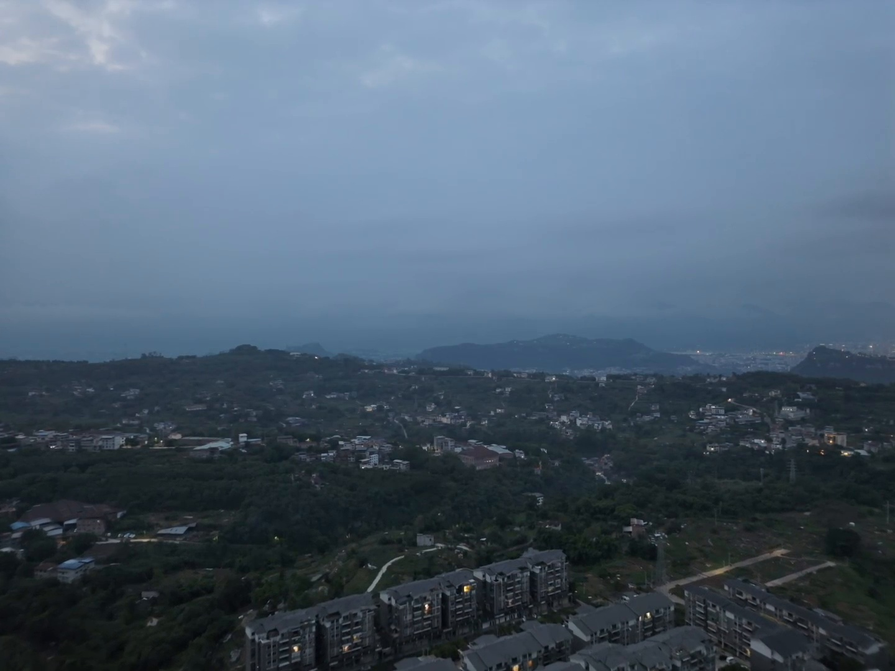
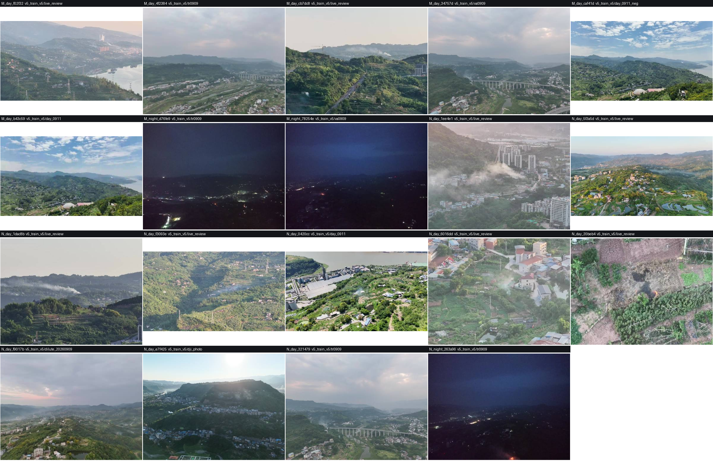
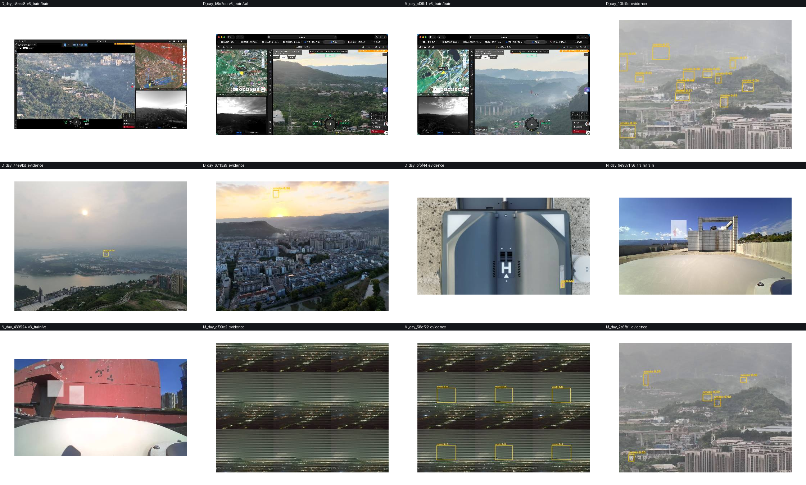
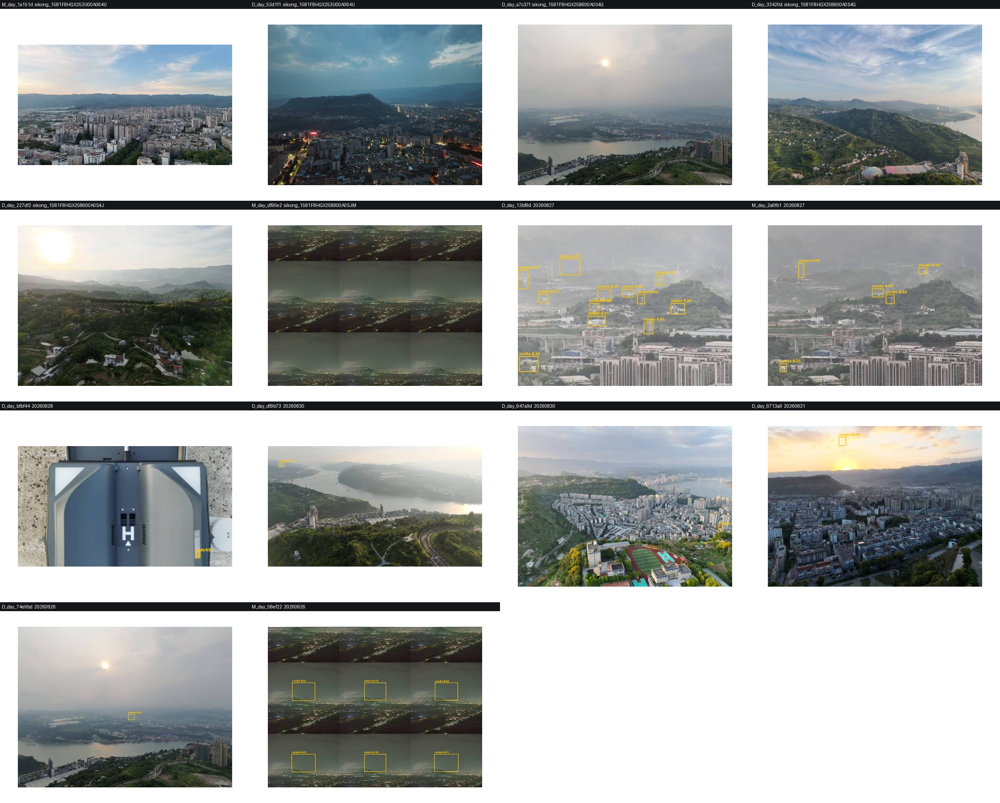

v5_train_v5 是司空截图污染源，我只保留了其中 19 张干净帧」。
实测（39 张联系表逐张看图）：v5_train_v5 的 19 张全部是干净航拍，没有一张含司空 UI。v6_train（3 张），另有 2 张是标注平台截图、2 张是横向撕裂坏帧。
合计 7 张必须剔除。v5_train_v5 的图片」如果照字面执行，会删掉 19 张干净帧、却留下 7 张真正脏的帧 ——
方向刚好相反。成因是「数据集目录名」与「画面里有没有 UI」不是一回事，得看画面本身。先把「生产侧到底有没有 UI」钉死 —— 这决定了 UI 截图算不算域污染。
| 侧 | 样本 | 结论 |
|---|---|---|
| 生产检测输入 | evidence/review/sikong_1581F8HGX258600A0S4J/random_*.jpg （职教中心实飞抽帧） |
零 UI 纯相机画面：无参数栏、无遥测、无地图、无虚拟摇杆。 且实测分辨率 1024×768 / 1280×720。 |
| 训练集部分样本 | v6_train/images/train/v6_001954.png v6_train/images/val/v6_001888.png |
整屏 UI 左侧视频窗 + 右侧地图 + 底部辅助画面 + 顶部相机参数栏 都被烧进了图里。 |

evidence/review/…/random_1790420594900_491.jpg。v5_train_v5 那 19 张（你要求删的那批）
v5_train_v5 的 19 张（来自 live_review / tr0909 / va0909 / day_0911 / day_0911_neg / dilute_20260909 / dji_photo 共 7 个子目录）。
逐张看：全部是干净航拍，无一张含司空 UI。
v6_train）+ 标注平台截图 ×1。
下排：机场本体近场 ×3、撕裂坏帧 ×2、标注平台截图 ×1。
evidence 的 14 张。可见 20260827 那两张是标注平台截图（灰蒙底色 + 满屏黄框），
review/low 与 20260926 各有一张横向撕裂伪影坏帧。| 类别 | 锚点 id | 实际文件 | 为何不可用 |
|---|---|---|---|
| 必须剔除 | D_day_b3eaa8 | v6_train/images/train/v6_001954.png | 司空驾驶舱整屏截图（左视频+右地图+下辅助画面+顶部参数栏） |
| D_day_b8e2dc | v6_train/images/val/v6_001888.png | 同上（左地图+中视频+下辅助画面） | |
| M_day_af0fb1 | v6_train/images/train/v6_001875.png | 同上（顶部参数栏+右地图+底遥测+虚拟摇杆） | |
| 必须剔除 | D_day_13bf9d | evidence/20260827/sikong_…064U_192320.jpg | 标注平台截图：画面被去色灰蒙处理 + 满屏黄色标注框，不是无人机原始帧 |
| M_day_2a6fb1 | evidence/20260827/sikong_…064U_192340.jpg | 同上 | |
| 必须剔除 | M_day_df90e2 | evidence/review/…SJM/low_1790357633049_362.jpg | 坏帧：横向撕裂伪影（疑似读帧不完整就落盘） |
| M_day_58ef22 | evidence/20260926/sikong_…SJM_013457.jpg | 同上（还叠加了黄框） | |
| 黄色框泄漏 | D_day_74e9bd | evidence/20260926/sikong_…S4G_172810.jpg | 画面干净，但已画有历史标注黄框 → 给标注员暗示（与"刻意不显示程序算出的档位"同一类问题） |
| D_day_6713a9 | evidence/20260831/sikong_…064U_190647.jpg | 同上，且黄框较多 | |
| D_day_647a9d | evidence/20260830/sikong_…S4J_184607.jpg | 同上，黄框 1 个（较轻） | |
| 建议保留 | D_day_bfbf44 | evidence/20260828/sikong_…SJM_183656.jpg | 机场本体/机臂近场。这是协议 §5.2「近场不采集帧」的正面考点（应判 非烟 + 不适用 + NEAR）， 留着能校准两位标注员是否会用 NEAR 规则。但当前被自动分档放进了 D 档，标签错，需修正说明。 |
| N_day_9e987f | v6_train/images/train/v6_002453.jpg | 机场天台/机库盖子开启，同上是 NEAR 考点 | |
| N_day_469524 | v6_train/images/val/v6_002270.jpg | 机场/机库红色建筑特写，同上 |
用「分辨率 × 宽高比」当探针扫了整个数据集 —— 无人机原始视频帧只有固定几种分辨率（960×720 / 1280×720 / 1440×1080，全 4:3 或 16:9）， 而桌面截图是 2968×1732 / 2560×1329 这种非标准宽高比（1.714 / 1.926 / 1.699）。
| 数据集 | 合计 | 可疑子目录（非 16:9 且宽高比异常） | 桌面截图 |
|---|---|---|---|
| v5_train_v5 | 930 张 | misc/ 107 张（2968×1732×52、2560×1329×42、2942×1732×5…） wechat_fix/ 1 张（2560×1329） |
108 张 （11.6%） |
| v6_train | 3058 张 | train/ ：2560×1329×133 + 2968×1732×132 + 2942×1732×25 val/ ：2560×1329×16 + 2968×1732×14 + 2942×1732×1 |
321 张 （10.5%） |
v5_train_v5 930 张中 108 张是司空截图」——
实测 107（misc/）+ 1（wechat_fix/）= 108，分毫不差。
说明：① 该结论为真；② 但它集中在 misc/ 一个子目录里，不是"整个 v5_train_v5 都是截图"。
v6_train 有 321 张（10.5%）同类截图 —— 这一条此前没有记录，属于新发现，
且 v6_train 是较新的训练集，影响面比 v5 更直接。
| 项 | 说明 |
|---|---|
| 对本次锁点校准 | 7 张必剔项会让标注员把力气花在无法判读的图上（整屏 UI / 灰蒙满屏框 / 撕裂帧）， 且 2 张标注平台截图与 3 张黄框帧会给答案暗示，直接污染一致性数据。 |
| 对训练 | 训练集每 10 张就有 1 张带 UI 的截图 → 域污染已实锤；这也解释了为什么模型在真实流上框级定位差 （记忆里 9/11 的结论：白天召回不是瓶颈，短板是白天框级定位）。 |
| 删完后的覆盖代价 | 39 → 32 张（只剔 7 者）或 29 张（连黄框 3 张一并剔）。 D 档会从 12 掉到 9 或 6，且 夜间只有 3 张（M_night 2 + N_night 1）—— 本来就不足。 |
| 方案 | 做什么 | 锚点数 | 代价 / 收益 |
|---|---|---|---|
| A 最小改动 |
只剔 7 张必剔项；3 张黄框帧保留，在卡片上加一行提示「图上有历史标注框，请忽略，只判红框内的目标」 | 39 → 32 D 9 / M 8 / N 12 / 夜 3 |
立刻可用，改动小。黄框的暗示效应仍在（只是被弱化），一致性数据有一点点噪声。 |
| B 按铁律从严 |
7 张必剔 + 3 张黄框泄漏帧一并剔（符合「拿不准→暂缓/隔离」） | 39 → 29 D 6 / M 8 / N 12 / 夜 3 |
口径校准建立在干净样本上，最稳。但 D 档只剩 6 张，D 档一致率会变得很不稳（6 张里错 2 张就掉到 67%）。 |
| C 彻底重做 |
收紧候选筛选规则（排除桌面分辨率、排除含黄框的 evidence、排除 review/low 撕裂帧、排除机场近场另立分区）， 再从干净来源补足 D/M/N × 昼/夜，重建一套锚点（含夜航补采） | 重建为 30–40 | 最彻底、可长期复用（规则沉淀进工具）。代价：需要你再等一轮，且夜间/D 档仍要靠新采集才补得齐。 |
build_anchor_candidates.py，
等夜航/远烟采集到位后再补样本重建。
anchor_wb_v12_*），旧的三级进度不会带过来，也不应该带过来。
| 项 | 状态 |
|---|---|
协议 protocol.html | 已上线 五档判定（新增「明火+烟」「明火」）、§7 门禁改为粗口径硬门槛、§6.1 补火烟兼有画法、§5.1 增"夜间亮核"行（以 N_night_263a96 为实例，已按你的意见判为明火+烟） |
工作台 anchor_workbench.html | 已上线 五档按钮（火档橙色）、理由码新增 FLAME、一致性面板改为「粗口径硬门槛 + 五档参考」 |
入口页 index.html | 已上线 加了一张五档选择速查表（明火+烟 / 明火 / 确定烟 / 疑似轻烟 / 非烟 各在什么时候选） |
校验器 check_agreement.py | 已改 粗口径硬门槛 + 五档参考项 + 粗口径混淆矩阵；顺带修掉一个真 bug：单文件（导出 A+B）模式下 mA/mB 未定义会直接崩溃 —— 而这正是你最可能用的模式 |
| 验收 | 全绿 静态审计 71/71；真实页面 CDP 验收 33/33（含点「明火+烟」真的落库 fire_smoke、放大查看器真的加载 1600×830 原图、一致性面板真的显示 粗口径 100.0% / 五档 60.0% 且 PASS）；HTTP 核验 磁盘 md5 == HTTP md5、39 张原图逐个 200 |
tmp/ 下的审计脚本生成，可复跑复核。